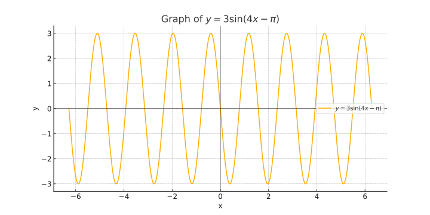
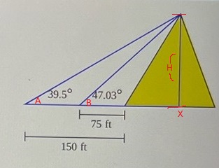

Find the exact value, if any, of the following composite function:
Step 1: The tangent function, \( \tan(x) \), is periodic with a period of \( \pi \). Therefore:
Step 2: The given angle \( \frac{5\pi}{2} \) is outside the principal range of the inverse tangent function, which is \( \left(-\frac{\pi}{2}, \frac{\pi}{2}\right) \). We need to find an equivalent angle within this range. We can subtract \( 2\pi \) to get an equivalent angle:
Step 3: Now, we find:
However, \( \tan \left( \frac{\pi}{2} \right) \) is undefined, so:
Step 1: Consider the periodic nature of the tangent function and the range of the inverse tangent function. The range of \( \tan^{-1}(x) \) is \( \left(-\frac{\pi}{2}, \frac{\pi}{2}\right) \). We need to bring \( \frac{5\pi}{2} \) within the range:
Step 2: Since \( \frac{\pi}{2} \) is within the range of \( \tan^{-1}(x) \), we consider:
But \( \tan \left( \frac{\pi}{2} \right) \) is undefined, thus the original expression is not defined:
A funicular carries passengers up an embankment to an observation point. If the length of the track is 54.7 meters and the angle of inclination is \( 42^\circ \), determine the height of the embankment.
Step 1: Identify the trigonometric relationship. We use the sine function because we have the hypotenuse (length of the track) and need to find the opposite side (height of the embankment):
Step 2: Plug in the known values:
Step 3: Solve for \( h \):
Using a calculator to find \( \sin(42^\circ) \approx 0.6691 \), we get:
Step 1: Identify the trigonometric relationship. This time, we use the cosine function to find the adjacent side first and then the Pythagorean theorem to find the height.
Step 2: Plug in the known values:
Step 3: Solve for \( a \):
Using a calculator to find \( \cos(42^\circ) \approx 0.7431 \), we get:
Step 4: Use the Pythagorean theorem to find \( h \):
Find the exact value. Do not use a calculator:
Step 1: The cosecant function is the reciprocal of the sine function. Therefore, we need to find the sine of the angle first:
Step 2: The sine function is periodic with a period of \( 2\pi \). So, we can subtract \( 2\pi \) until the angle is within one period:
Step 3: Now, we find the sine of the angle:
Step 4: The cosecant is the reciprocal of the sine:
Therefore, the exact value is:
Step 1: Use the co-function identity for sine and cosecant. We know that:
Using the periodic property of sine:
Step 2: Simplify the angle using the periodicity of sine:
Step 3: We find the sine of the simplified angle:
Step 4: Thus, the cosecant is:
Therefore, the exact value is:
With \( y = 3 \sin(4x - \pi) \):
Find the amplitude, phase shift, graph the function, find start and end points, intercepts, high and low points.
Step 1: Identify the amplitude and phase shift. The amplitude is the coefficient of the sine function, and the phase shift is determined by the horizontal shift inside the function:
Amplitude: 3
Phase shift: \(\frac{\pi}{4}\) to the right
Step 2: Find the start and end points of one period. The period of the function \( \sin(bx) \) is given by \( \frac{2\pi}{b} \):
Start point: \( x = \frac{\pi}{4} \)
End point: \( x = \frac{\pi}{4} + \frac{\pi}{2} = \frac{3\pi}{4} \)
Step 3: Determine the intercepts, high and low points. The sine function oscillates between -1 and 1. Multiplying by 3 scales this to -3 and 3:
Intercepts occur when the sine function is 0:
Solving for \( x \):
High points occur when the sine function is 1:
Low points occur when the sine function is -1:
Graph:
A graph of \( y = 3 \sin(4x - \pi) \) would show a sine wave with amplitude 3, phase shift \(\frac{\pi}{4}\) to the right, period \(\frac{\pi}{2}\), intercepts at \( x = \frac{\pi}{4}, \frac{3\pi}{4}, \frac{5\pi}{4}, \ldots \), high points at \( y = 3 \) and low points at \( y = -3 \).

Find the exact value of the following expression:
Step 1: Express the angle in terms of a reference angle within \(0\) to \(2\pi\). Note that \( \frac{23\pi}{12} \) is larger than \(2\pi\):
Step 2: Use the periodic property of sine to find an equivalent angle within one period:
Step 3: Therefore, the exact value is:
Step 1: Another way to find the equivalent angle is by reducing it modulo \(2\pi\). Since:
This shows that \( \frac{23\pi}{12} \) is equivalent to \( -\frac{\pi}{12} \). So:
A pyramid was built about 2600 BC. Its original height was 297 feet, 11 inches, but due to the loss of its topmost stones, it is now shorter. Find the current height of the pyramid, using the information given in the figure on the right:
Step 1: Calculate the height of the smaller triangle using \( \angle B = 47.03^\circ \):
Step 2: Solve for \( x \):
Step 3: Calculate the height of the entire pyramid using \( \angle A = 39.5^\circ \):
Step 4: Solve for \( H \):
Step 5: Subtract \( x \) from the total height to find the remaining height of the pyramid:
The current height of the pyramid is approximately 42.89 feet.